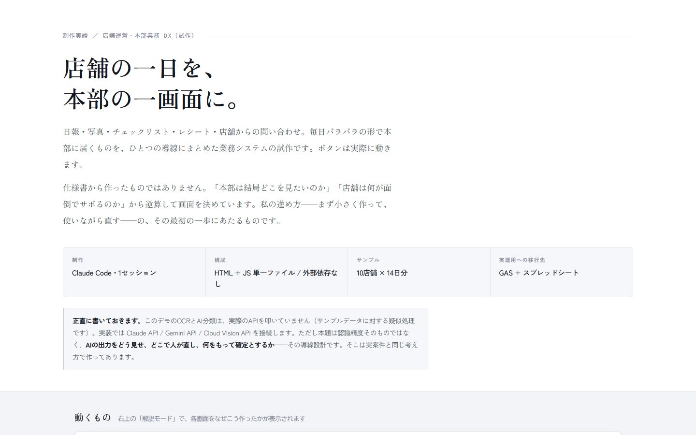
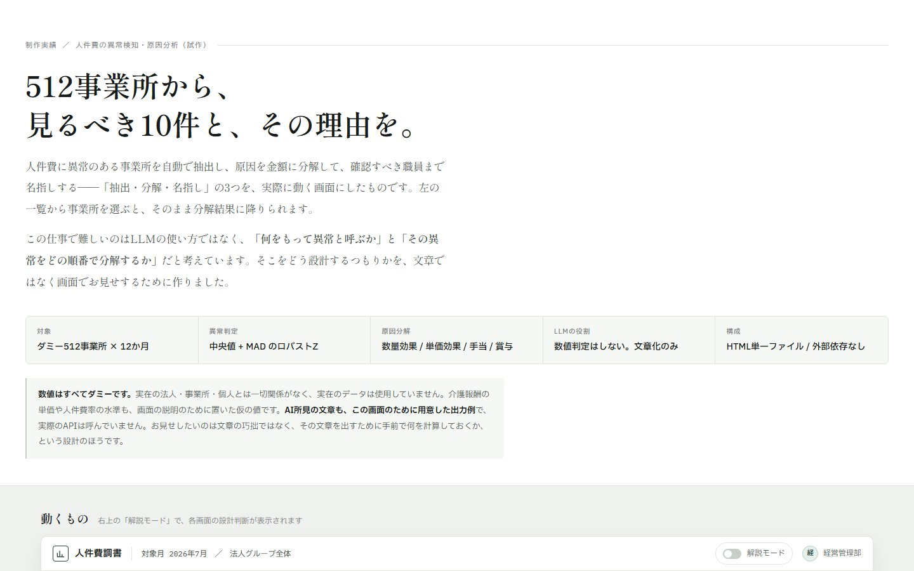

試作飲食・店舗の本部業務
店舗運営コンソール
日報・写真・チェックリスト・レシート・店舗からの問い合わせなど、毎日ばらばらに本部へ届くものを1つの流れにまとめた管理画面です。10店舗・14日分の架空データで動きます。
- 考え方
- 「本部は何を見たいか」「店舗は何が面倒か」から画面を決める
- 本番の形
- GAS＋スプレッドシートに移して運用
触ってほしいところ：右上の「解説モード」を入れると、それぞれの画面をなぜこう作ったかが表示されます。
サンプルを開く提案資料14枚目の実績のうち、画面で動く2つを、実際に触れる形にまとめました。店舗名・人名・数字はすべて架空のサンプルで、実在のデータは使っていません。
AI業務自動化コンサルタント 神田 渉
日報・写真・チェックリスト・レシート・店舗からの問い合わせなど、毎日ばらばらに本部へ届くものを1つの流れにまとめた管理画面です。10店舗・14日分の架空データで動きます。
触ってほしいところ：右上の「解説モード」を入れると、それぞれの画面をなぜこう作ったかが表示されます。
サンプルを開く
512事業所・12か月分の架空データから、人件費がいつもと違う動きをした事業所を見つけ、その原因を「人数」「単価」「手当」「賞与」に分けて金額で示す画面です。
触ってほしいところ：左の一覧から事業所を1つ選ぶと、なぜ引っかかったのかを金額の内訳まで追えます。
サンプルを開く